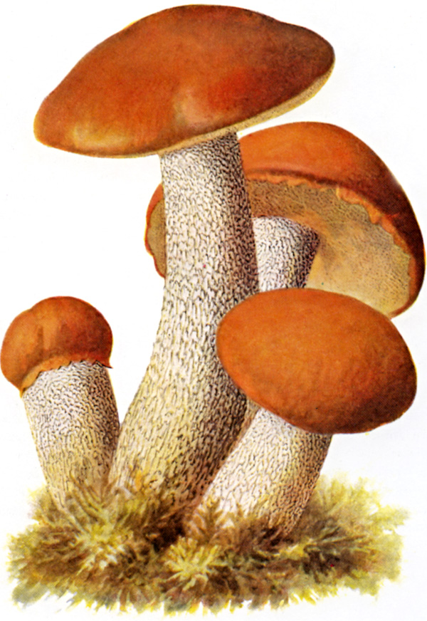
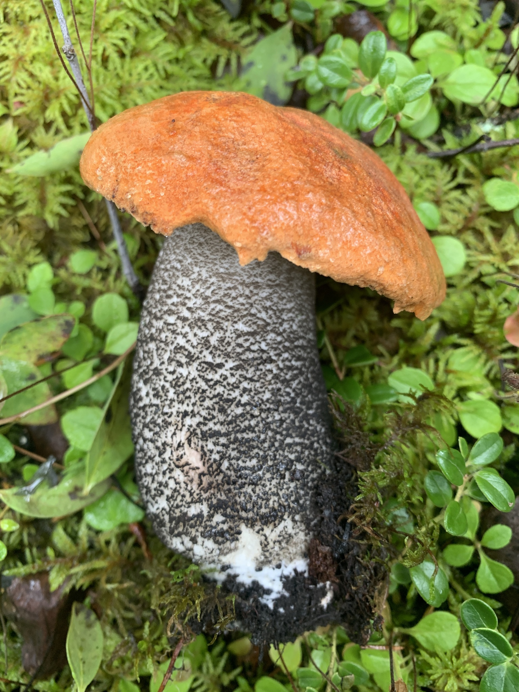
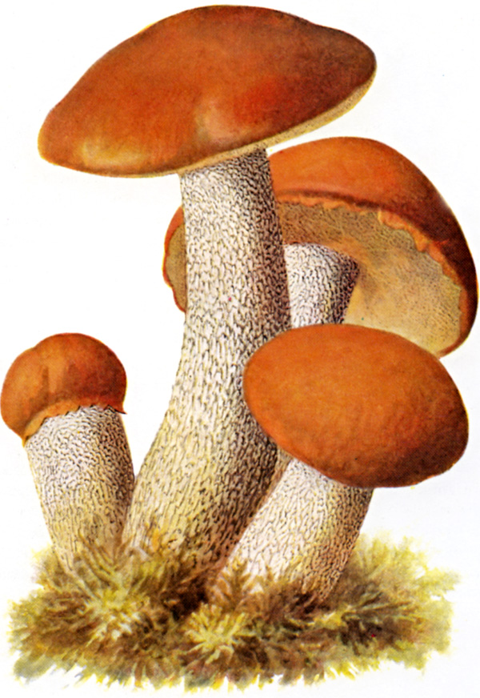
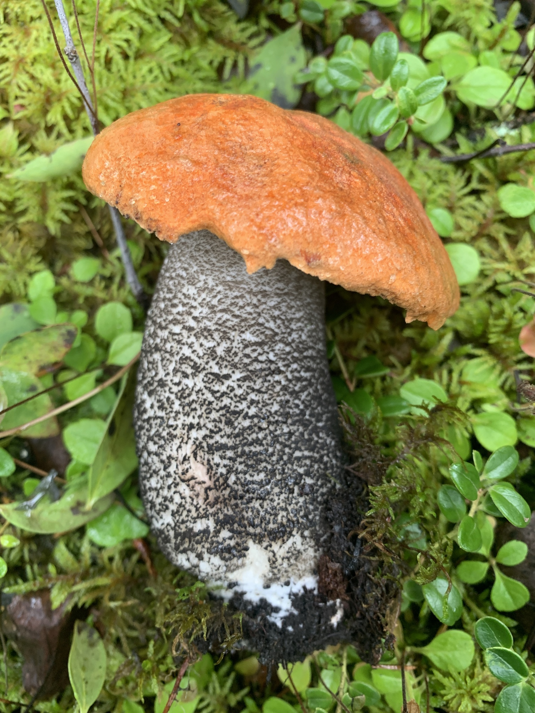

| Cecha | Opis |
|---|---|
| Kapelusz | 6 - 20cm, pomarańczowoczerwony, rudy, młody kulisty, potem półkolisty, następnie wypukły, stary rozpostarty, grubomięsisty; powierzchnia gładka, zamszowata, brzeg ostry. |
| Rurki | Pory najpierw białe, potem oliwkowoszare, w końcu oliwkowożółtawe; rurki bardzo długie, białawe, zatokowo wycięte. |
| Trzon | Białawy z kosmkami najpierw białawymi, potem pomarańczowymi do brązowoczerwonych, cylindryczny, bardzo długi, z nieco zgrubiałą podstawą, czasem słabo wygięty. |
| Miąższ | Białawy, w trzonie - głównie w podstawie - zdrewniały, po przekrojeniu czarniawy, w podstawie przy nacięciu zielonkawy. Zapach przyjemny, smak łagodny. |
| Zarodniki | 13 - 17 x 4 - 5µm, gładkie. Wysyp brązowowawochrowy. |

Najczęściej pojawiają się od lipca do października.

Najczęściej pod osikami.
Ma czarne łuseczki na trzonie i jest jaśniejszy. Dodatkowo, w przeciwieństwie do koźlarza czerwonego - rośnie pod brzozami.

Rośnie tylko pod sosnami.